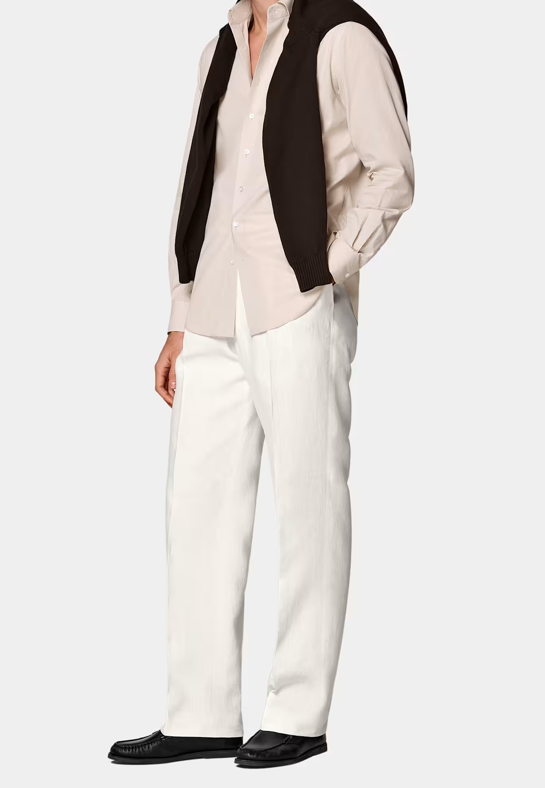
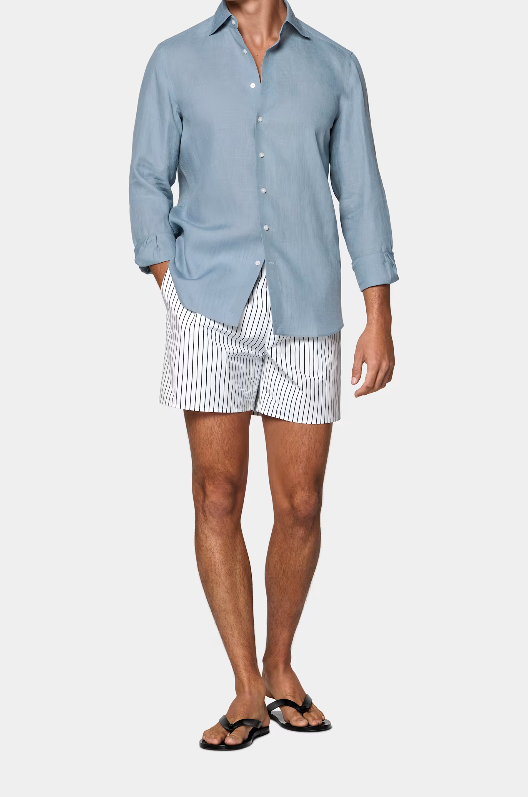
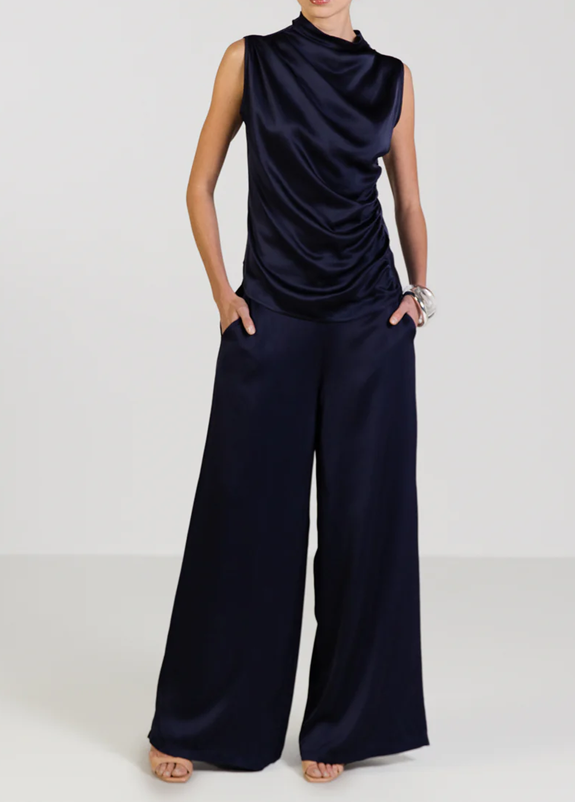

我们在校园里相识，从朋友开始，但是很快意识到我们可以打几个小时的电话，而且最开心的时刻就是跟对方待在一起的时间，于是我们约着一起过假期。
着装建议Dress Code
以下是我们推荐的着装配色以及搭配灵感。
建议您以鸡尾酒会风格作为选择，如果您在下方推荐中找不到灵感，可以自由发挥，只是请避免穿着蓝色牛仔裤和运动服饰。
期待您盛装出席。
Our color recommendations are shown below.
We encourage you to dress up in whatever makes you feel both festive and like yourself.
The only thing we ask is that you avoid blue jeans and athletic wear.




